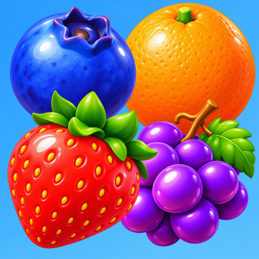
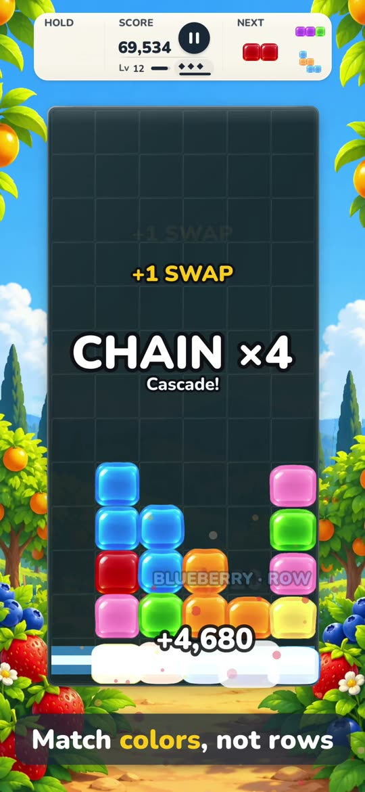

Press kit
Everything here may be used in coverage of Juicefall.
ZIP, 20 MB: eight full-size screenshots, the logo, the icon, two pieces of key art and the 18-second preview.
Fact sheet
- Game
- Juicefall (on the App Store: Juicefall: Jelly Match Puzzle)
- Developer
- Aaron Seaman
- Platform
- iPhone, iOS 26 or later
- Genre
- Puzzle: falling shapes, matched by color
- Price
- Free, with six fruit as optional one-time purchases (US$0.99 to US$1.99 each, or all six for US$5.99)
- Ads and subscription
- None
- Privacy
- Data Not Collected; no account; plays offline
- Languages
- English, French, German, Japanese, Portuguese (Brazil), Spanish
- Age rating
- 4+
- App Store
- apps.apple.com/app/id6823235878
- Press contact
- philippinepogi@icloud.com
In one line
Juicefall is a falling-jelly puzzle for iPhone where you match colors, not rows.
In a paragraph
Jelly shapes drop into a garden well. Line up three or more jellies of one color, in a row or a column, and they burst into juice; whatever falls after can match again, and every step of a cascade multiplies the points. Full rows do nothing. Bigger matches make fruit with a job, from a blueberry that clears its row to grapes that take a whole color. Free to play, with no ads, no subscription and no account.
About the game
Most falling-block games clear a full row. Juicefall turns that around: color is what counts, so every drop is a small color puzzle. The jellies are soft bodies that wobble, squish and burst, and a match makes the jellies above fall into new matches, so one good drop can set off a chain.
Bigger matches make fruit. Four in a row make a blueberry that clears its row, four in a column an orange that clears its column, an L or T shape a strawberry that bursts, and five in a line grapes that take a whole color. Two different fruit swapped together fuse into a kiwi with both powers.
There are three ways to play. Classic speeds up every level. Calm has no gravity: shapes fall only when you drop them. Hectic levels up twice as fast. A daily challenge gives everyone the same puzzle each day.
Every mode is free. After the first game, the next five have every fruit, so players can try them all; each fruit is then a one-time purchase, all six together cost less, and Family Sharing is included. There are no ads and no subscription, the game collects no data and it plays offline.
Features
- Match colors, not rows: three or more of one color in a row or a column burst; full rows do nothing
- Cascades that multiply the points at every step
- Fruit power-ups made by bigger matches, and a kiwi fused from two of them
- Classic, Calm and Hectic, and a daily challenge
- Soft-body jellies at 120 Hz on ProMotion iPhones
- Game Center leaderboards and 27 achievements; records kept in iCloud
- Color symbols, Reduce Motion and VoiceOver support; six languages
- No ads, no subscription, no account, no data collected; plays offline
Screenshots and art
 Match colors, not rows
Match colors, not rows
 Fuse fruit
Fuse fruit
 Chain reactions
Chain reactions
 Three ways to play
Three ways to play


App icon
Preview videoFull-size files of all eight screenshots (1320 × 2868), the logo with a clear background, the icon at 1024 × 1024 and the key art at 3840 pixels wide are in the press kit.
Review access
To review with every fruit unlocked, write to the press contact above.